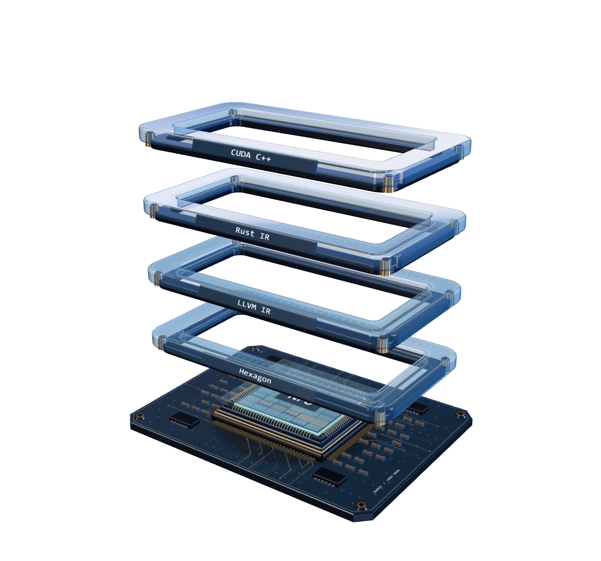

Input
CUDA C++
__global__ void vector_add(…)Clang analyzes the bounded FP32 vector-add source shape.
CUDA at the entry. Rust in the middle. LLVM below.

Familiar languages, with a distinct role at each layer of the compiler platform.
__global__ void vector_add(…)Clang analyzes the bounded FP32 vector-add source shape.
Operation::AddOwns the frontend, IR, verification, lowering and runtime.
cuda_npu_add(a, b, out + 1);Connects generated target entries and host interfaces to native execution.
Supports model export, evidence checks and benchmark workflows.
Standalone CUDA v0 is verified for source import, CPU execution and Hexagon v75 simulation.
__global__ void vector_add( const float* a, const float* b, float* out, int n) { int i = blockIdx.x * blockDim.x + threadIdx.x; if (i < n) out[i] = a[i] + b[i];}Source-to-simulator verifiedBounded FP32 vector add. Broader CUDA compatibility remains planned.
Kernel translation, host compatibility and model execution have different support contracts.
No. V0 imports standalone kernels. Phase 4 has separate host adapters.
No. LLVM compiles native code. QNN is a separate, unfinished lowering route.
Inference is active. Broader workloads and hardware require later qualification.